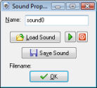

To create a sound resource in your game, use the item Create Sound in the Resources menu or use the corresponding button on the toolbar. The following form will pop up.

To load a sound, press the button labeled Load Sound. A file selector dialog pops up in which you can select the sound file. There are two types of sound files, wave files and midi files. Wave files are used for short sound effects. They use a lot of memory but play instantaneously. Use these for all the sound effects in your game. Midi files describe music in a different way. As a result they use a lot less memory, but they are limited to instrumental background music. Also, default only one midi sound can play at any time.
Once you load a music file you can listen to the sound using the play button. There is also a button Save Sound to save the current sound to a file. This button is not really required but you might need it if you lost the original sound.
| Converted from CHM to HTML with chm2web Pro 2.85 (unicode) |